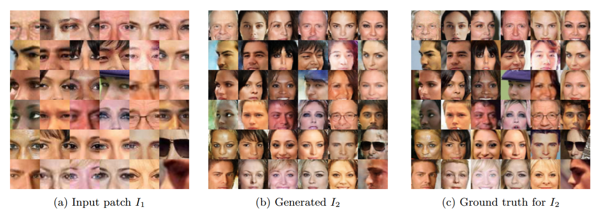
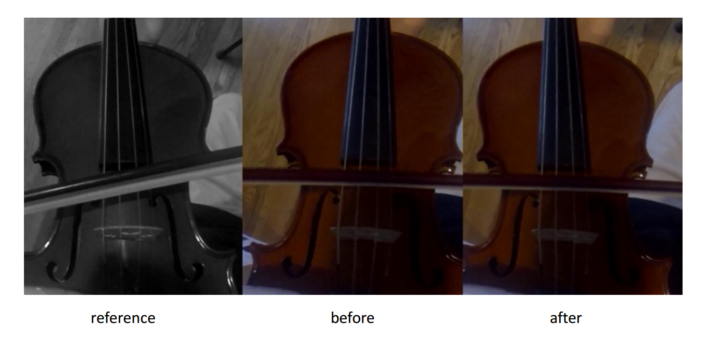
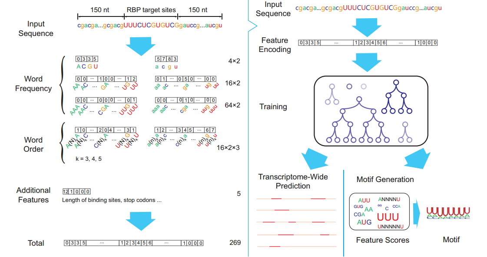
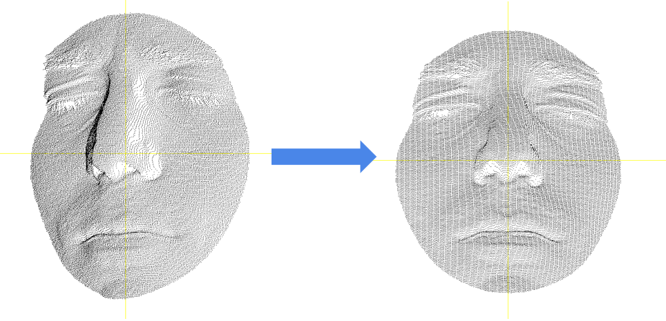

Stanford University [Jul. 2016 - Sep. 2016]
I worked with Prof. Stefano Ermon on building a general image recovery framework using conditional Generative Adversarial Network. We model was capable of generating high-quality images that look authentic to human eyes from various kinds of corrupted images: grayscale images, images with only one color channel, cropped images, images corrupted by Gaussian blur, etc. We are currently finishing up the work.

University of Pennsylvania [Feb. 2016 – Jun. 2016]
I worked with postdoc Hyun Soo Park (currently Professor at University of Minnesota) on predicting musical notes from videos of playing musical instruments. I finished the functionality that stabilized position of musical instruments within each frame of video sequence using Enhanced Correlation Coefficient (ECC) maximization, and established good mapping between features of stabilized frames and FFT features of the sound signal.

Tsinghua University [Oct. 2015 - Jan. 2016]
I worked with Prof. Jianyang Zeng on using machine learning techniques to predict the binding sites of RNA-binding proteins. We developed a boosting algorithm with hand-crafted features that could outperform the state-of-the-art method significantly. This work has been submiited to RECOMB and is currently under review. [Paper] [Supplementary] [Code]

Face++ [Feb. 2016 – Jun. 2016]
I worked at Face++, Megvii Inc. on transforming a 3D face taken from arbitrary angle to its frontal view. I developed a system using Iterative Closest Point algorithm and other speed-up techniques that could solve 3D face alignment problem with high accuracy and speed.

{kind=link}
{kind=link}
{kind=link}
{kind=link}